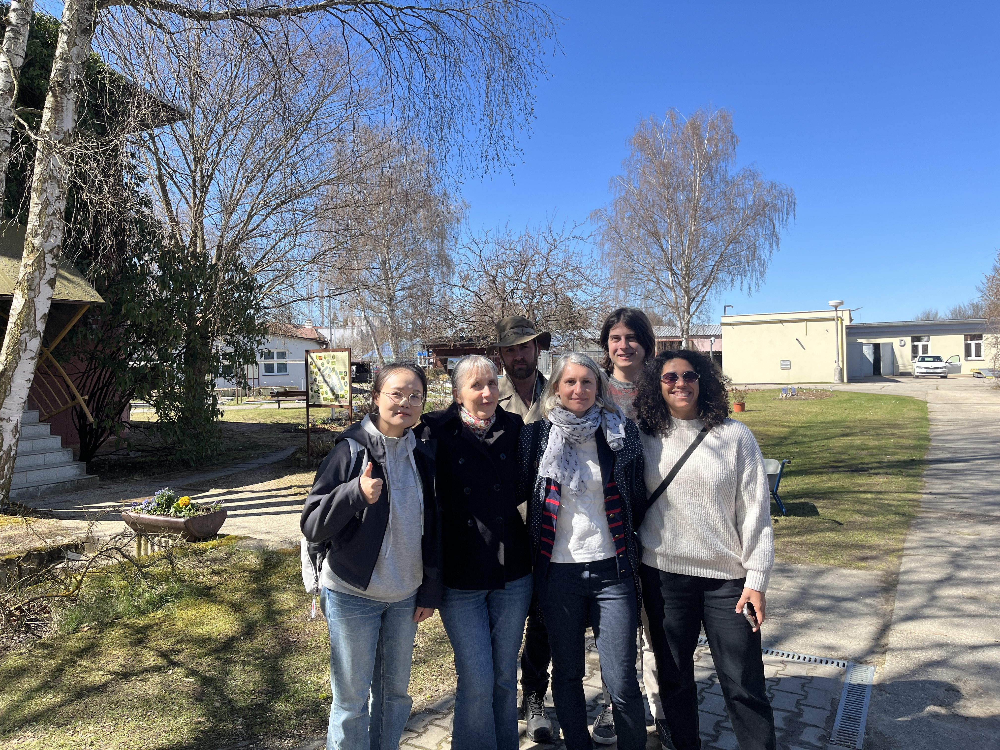
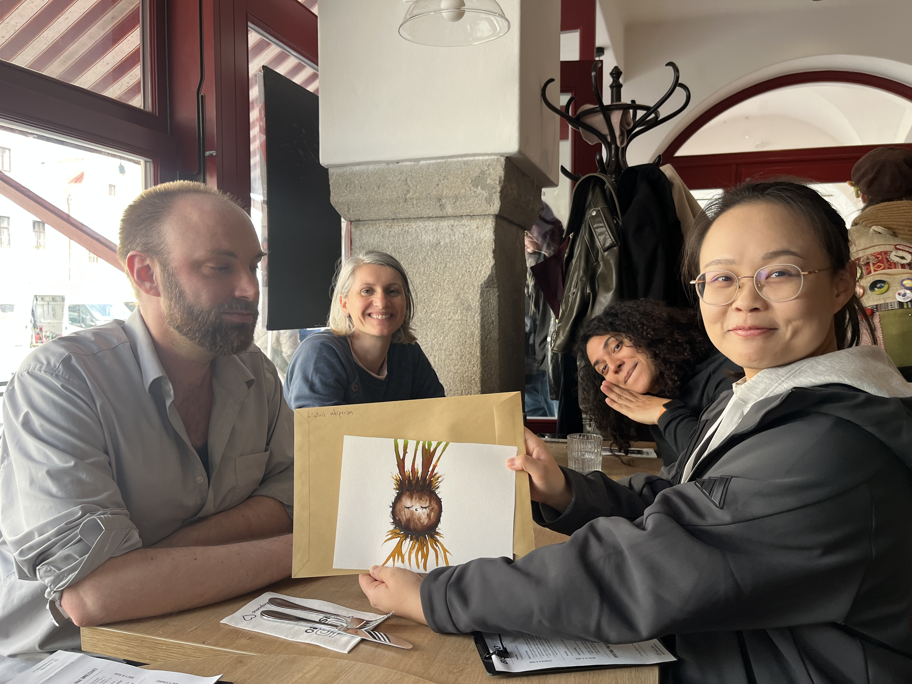

Happy to meet Jitka’s group in Czech Republic
Jiayu visited Institute of Botany of the Czech Academy of Sciences in Třeboň, Czech Republic, communicating with a group of plant ecologists interested in knowing all things about plant life belowground, including Jitka Klimešová, Jana Martínková, Curtis Lubbe, etc.
After the MGCP conference in Konstanz, Germany, I came to Třeboň, Czech Republic to meet Jitka Klimešová and visit ExFuMo group in the Institute of Botany of the Czech Academy of Sciences.
I'm really happy to share the plant clonality in coastal wetland this time. We talked about the specific clonality happened in the coast. Thank Jitka, Jana, Curtis, Iveta, and Gabi showing me around and visiting the lab. Belowground organs are diverse and awesome. I will keep on learning belowground life and hope further collaboration.

